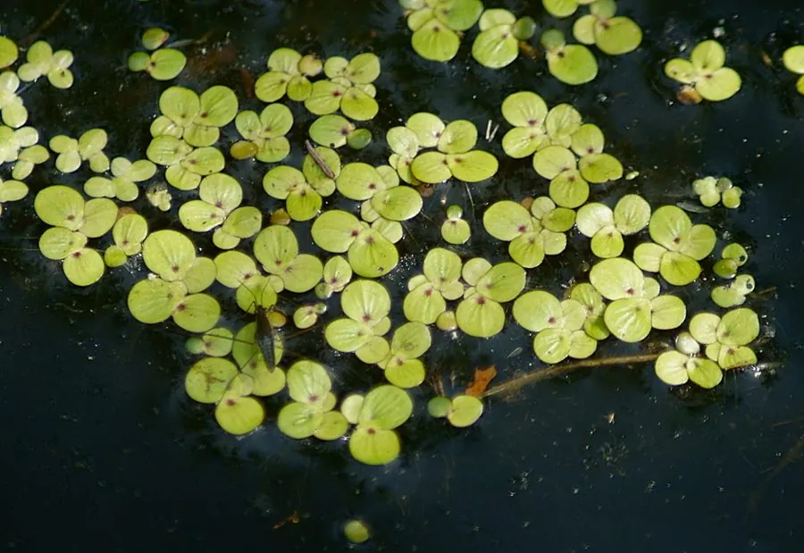

水生植物 · 植物界
紫萍 Spirodela polyrhiza

天南星科紫萍属小型漂浮水生植物，叶状体紫红色、圆形，根系多条，常铺满池塘水面，是常见的浮萍类植物和饲料。
- 分类
- 门被子植物门纲单子叶植物纲目泽泻目科天南星科属紫萍属
- 栖息环境
- 池塘、稻田、沟渠等静水或缓流水体，喜温暖、富营养
- 地理分布
- 全球温带与热带水域，中国各地常见
- 保护级别
- 暂无评估
物种志
紫萍为天南星科紫萍属的漂浮水生植物，植株由 2–5 个叶状体连成，叶状体圆形或椭圆形，长 3–8 毫米，表面绿色，背面紫红色，下方生有 5–11 条细根。叶状体边缘较薄，常相互连接成小群体。花极少见，生于叶状体边缘的佛焰苞内，花期夏季；果实为坚果。
紫萍广泛分布于全球温带和热带水域，中国各地池塘、稻田和沟渠中常见，喜温暖、阳光充足和富含养分的水体，繁殖极快，常铺满水面。它蛋白质含量较高，可作鸭、鱼饲料，也可用于净化水体中的氮、磷；但过度繁殖会遮蔽水面，影响水下植物和鱼类。栽培容易，靠叶状体分裂繁殖；在富营养化水体中需注意控制其蔓延。
形态与习性
- 叶状体圆形或椭圆形，长 3–8 毫米
- 根系下方生 5–11 条细根
- 花期夏季，花极少见
- 水深漂浮于水面，不扎根
- 光照喜充足阳光
- 繁殖叶状体分裂繁殖，速度极快
- 主要用途鸭鱼饲料、水体净化
- 注意富营养水体中易过度蔓延
趣味知识
- 紫萍的叶状体背面呈紫红色，与普通浮萍的绿色背面不同。
- 它靠叶状体分裂繁殖，几天就能铺满一小片水面。
- 紫萍蛋白质含量高，常被用作鸭和鱼的饲料。